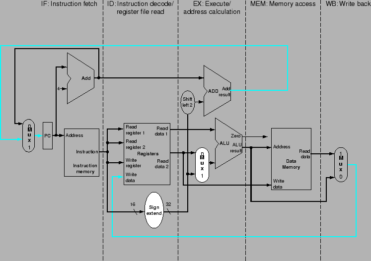
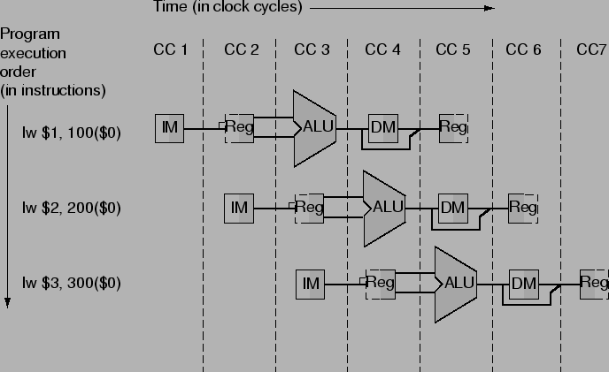
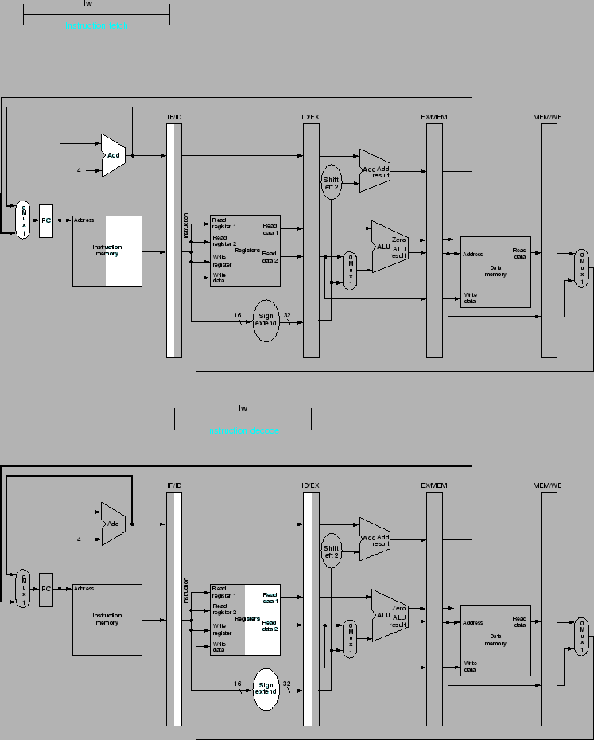
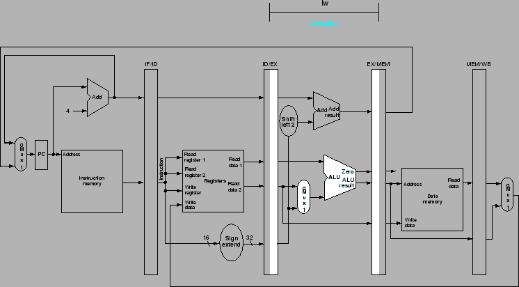
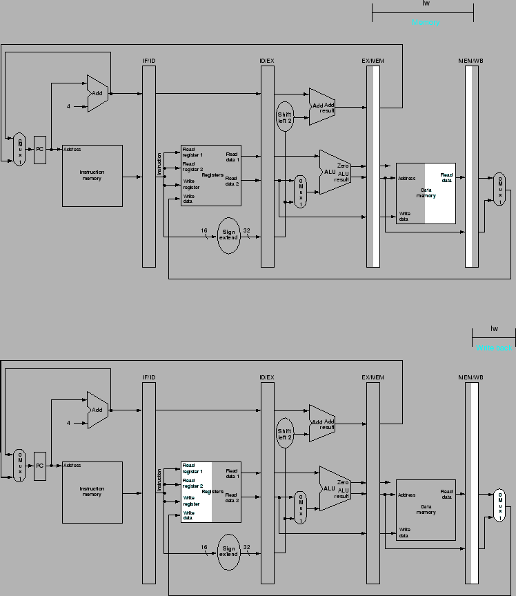
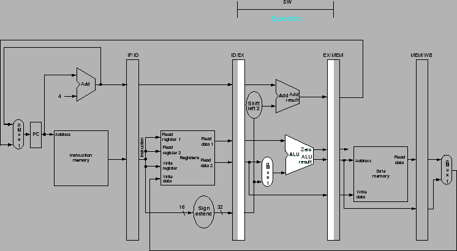
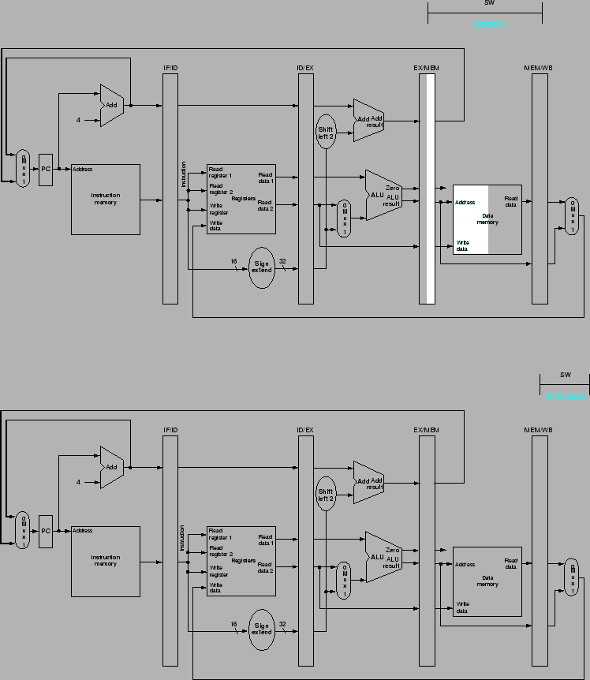
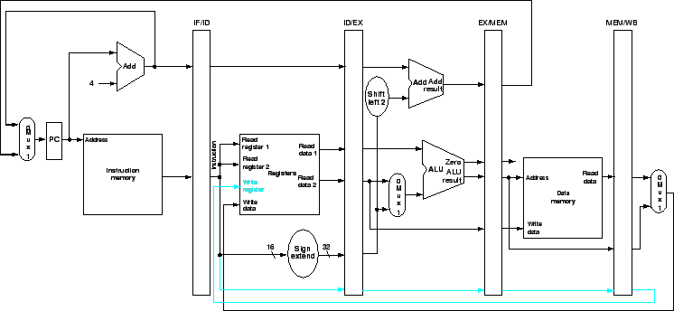
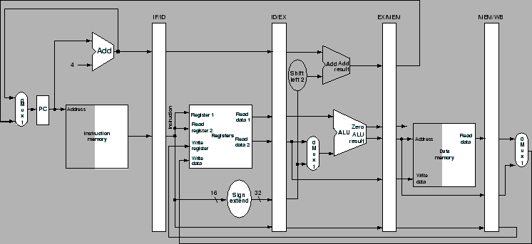

Next: แผนภาพแสดงการทำงานของไพพ์ลายน์
Up: การเพิ่มประสิทธิภาพโดยเทคนิคไพพ์ลายน์
Previous: Control Hazard
Contents
Index
รูป 6.9 แสดงเส้นทางข้อมูลของโปรเซสเซอร์ที่ทำงานในวงรอบเดียว จากในบทก่อน โดยแบ่งการทำงานออกเป็นสเตท 5 สเตท ซึ่งหมายความว่า ที่เวลาใดๆ จะมีคำสั่ง 5 คำสั่งทำงานอยู่พร้อมๆ กัน โดยมีการแบ่งดังต่อไปนี้
- IF: Instruction Fetch
- ID: Instruction Decode and Register File Read
- EX: Execution or Address Calculation
- MEM: Data Memory Access
- Write Back
Figure 6.9:
เส้นทางข้อมูลของโปรเซสเซอร์ที่ทำงานในวงรอบเดียว ที่มีการแบ่งการทำงานออกเป็นสเตท 5 สเตท
|

|
ซึ่งในรูป 6.9 เป็นการแบ่งเส้นทางข้อมูลเพื่อทำไพพ์ลายน์ อย่างคร่าวๆ ที่มีการเริ่มการประมวลผลจากทางซ้ายมาทางขวา
อย่างไรก็ตาม มีข้อยกเว้นสองประการได้แก่
- ในขั้นตอน Write Back ผลที่ได้ จะนำมาเขียนลงใน Register File ที่อยู่ส่วนกลางของเส้นทางข้อมูล
- การเลือกค่าใหม่ของ PC ซึ่งเลือกจาก
 หรือจาก Branch Target Address
หรือจาก Branch Target Address
วิธีหนึ่งในการแสดงการทำงานของไพพ์ลายน์ คือการแสดงภาพที่เหมือนประหนึ่งว่าแต่ละคำสั่งมีเส้นทางข้อมูลของตนเอง โดยแสดงการทำงานของคำสั่งต่างๆ เทียบกับแกนเวลา แสดงในรูป 6.10 ซึ่งทั้งสามคำสั่งต้องการเส้นทางข้อมูลสามชุด เราสามารถทำได้โดยเพิ่มรีจีสเตอร์เพื่อเก็บค่าระหว่างสเตทของการทำงาน โดยอนุญาตให้มีการใช้งานส่วนประกอบร่วมกันในวงรอบการทำงานเดียวกัน
Figure 6.10:
การทำงานของไพพ์ลายน์ ประหนึ่งว่าแต่ละคำสั่งมีเส้นทางข้อมูลของตนเอง
|

|
ค่าที่อ่านได้ รวมถึงสัญญาณควบคุมต่างๆจะต้องถูกเก็บไว้ในรีจีสเตอร์ที่เพิ่มขึ้นมาเพื่อใช้ในสเตทต่อไป รูป 6.11 แสดงไพพ์ลายน์รีจีสเตอร์ ที่แทรกอยู่ระหว่างสเตท ในแต่ละวงรอบการทำงานคำสั่งจะเคลื่อนจากไพพ์ลายน์รีจีสเตอร์จากสเตทหนึ่งไปยังสเตทต่อไป โดยการเรียกชื่อรีจีสเตอร์เหล่านี้โดยใช้เครื่องหมาย ``/'' ขั้นระหว่างสเตท เช่น IF/ID เป็นรีจีสเตอร์ระหว่างสเตท IF และ ID
สามารถสังเกตได้ว่าในสเตท Write Back จะไม่มีรีจีสเตอร์เนื่องจาก สภาวะของโปรเซสเซอร์ถูกเก็บไว้ในรูปของการเขียนรีจีสเตอร์, Memory, หรือ PC จึงไม่จำเป็นต้องเก็บค่าสถานะของโปรเซสเซอร์ไว้ในรีจีสเตอร์อีก และคำสั่งก็ทำงานเสร็จสิ้นสมบูรณ์แล้ว
Figure 6.11:
โปรเซสเซอร์ที่ประกอบกับไพพ์ลายน์รีจีสเตอร์
|
|
รูป 6.12 ถึง 6.14 แสดงการทำงานของไพพ์ลายน๎ โดยการแลเงารีจีสเตอร์ที่อยู่ระหว่างการทำงานในสเตทต่างๆ ซึ่งครึ่งทางซ้ายแสดงรีจีสเตอร์ขณะถูกอ่าน และ ครึ่งทางขวาแสดงรีจีสเตอร์ขณะถูกเขียน จะแสดงการทำงานของคำสั่ง lw ซึ่งแต่ละสเตทมีรายละเอียดการทำงานดังต่อไปนี้
- Instruction Fetch: จากส่วนบนของรูป 6.12 แสดงการอ่านคำสั่งจากหน่วยความจำ โดยแอดเดรสใน PC และนำมาบันทึกใน IF/ID รีจีสเตอร์ ซึ่ง IF/ID มีลักษณะคล้ายกับ Instruction Register ในการทำงานของโปรเซสเซอร์แบบหลายวงรอบ ค่า PC จะถูกเพิ่ม 4 ตำแหน่งและเขียนลงไปใน PC เพื่อพร้อมทำงานในวงรอบต่อไป ซึ่งค่า PC + 4 นี้ถูกบันทึกไว้ในรีจีสเตอร์ IF/ID เช่นเดียวกันในกรณีของบางคำสั่งที่ต้องการใช้งานเช่น beq ซึ่งในสเตทนี้คอมพิวเตอร์ไม่รู้ว่าทำการ Fetch คำสั่งประเภทใด จึงจึเป็นต้องส่งต่อข้อมูลสำคัญไปยังสเตทต่อไป
- Instruction Decode และ Register File Read: ในส่วนล่างของรูป 6.12 แสดงคำสั่งจากรีจีสเตอร์ IF/ID ที่ส่งค่าชื่อของรีจีสเตอร์สองตัว ที่ทำการอ่านจาก Register File สองตัว และฟิลด์ 16 บิต ส่วนหลังของคำสั่ง ที่ทำ Sign-extended และนำค่าทั้งสาม พร้อมกับค่า PC + 4 ผ่านไปเก็บไว้ที่รีจีสเตอร์ ID/EX
- Execute และ Adders Calculation: รูป 6.13 แสดงคำสั่ง load ที่อ่านค่ารรีจีสเตอร์ 1 และ Sign-extended จากรีจีสเตอร์ ID/EX โดยทำการบวกที่ ALU และนำผลบวกมาใส่ไว้ที่รีจีสเตอร์ EX/MEM
- Memory Access: จากส่วนบนของรูป 6.14 แสดงคำสั่ง load ที่อ่านค่าจากหน่วยความจำจากแอดเดรสในรีจีสเตอร์ EX/MEM ในไพพ์ลายน์ และทำการ load ค่าจากหน่วยความจำไปเก็บไว้ในรีจีสเตอร์ MEM/WB
- Write Back: ในส่วนล่างของรูป 6.14 แสดงขั้นตอนสุดท้าย ทำการอ่านค่าที่ load ได้จากหน่วยความจำที่อยู่ใน รีจีสเตอร์ MEM/WB นำมาเขียนกลับใน Register File ที่อยู่ส่วนกลางของรูป
Figure 6.12:
IF และ ID, สองสเตทแรกในการทำงาน ของคำสั่ง lw
|

|
Figure 6.13:
สเตทที่สาม ทำการประมวลผล EX ของคำสั่ง lw
|

|
Figure 6.14:
MEM และ WB, สเตทที่สี่และห้าในการทำงาน ของคำสั่ง lw
|

|
จากไล่เรียงการทำงานของคำสั่ง load เรามาพิจารณาการทำงานของคำสั่ง store ที่มีการทำงาน 5 สเตท เช่นเดียวกัน โดยมีการทำงานดังต่อไปนี้
- Instruction Fetch: เริ่มจากการอ่านคำสั่งจากหน่วยความจำ โดยแอดเดรสใน PC และนำมาบันทึกใน IF/ID รีจีสเตอร์ ซึ่ง IF/ID มีลักษณะคล้ายกับ Instruction Register ในการทำงานของโปรเซสเซอร์แบบหลายวงรอบ ค่า PC จะถูกเพิ่ม 4 ตำแหน่งและเขียนลงไปใน PC เพื่อพร้อมทำงานในวงรอบต่อไป ซึ่งค่า PC + 4 นี้ถูกบันทึกไว้ในรีจีสเตอร์ IF/ID เช่นเดียวกันในกรณีของบางคำสั่งที่ต้องการใช้งานเช่น beq ซึ่งในสเตทนี้คอมพิวเตอร์ไม่รู้ว่าทำการ Fetch คำสั่งประเภทใด จึงจึเป็นต้องส่งต่อข้อมูลสำคัญไปยังสเตทต่อไป จากส่วนบนของรูป 6.12 ทำงานได้ทั้งการ load และ store
- Instruction Decode และ Register File Read: รีจีสเตอร์ IF/ID ที่ส่งค่าชื่อของรีจีสเตอร์สองตัว ที่ทำการอ่านจาก Register File สองตัว และฟิลด์ 16 บิต ส่วนหลังของคำสั่ง ที่ทำ Sign-extended และนำค่าทั้งสาม พร้อมกับค่า PC + 4 ผ่านไปเก็บไว้ที่รีจีสเตอร์ ID/EX รวมเป็นค่า 32 บิต จำนวน 3 ชุด
ในส่วนล่างของรูป 6.12 ยังสามารถใช้ได้อยู่เนื่องจาในขั้นตอนนี้ยังไม่รู้ว่าเป็นคำสั่งอะไร ซึ่งทั้งสองสเตทแรกทำเหมือนกันทุกคำสั่ง
- Execute และ Adders Calculation: รูป 6.15 แสดงคำนวณแอดเดรส และเก็บไว้ในรีจีสเตอร์ EX/MEM และข้อมูลที่ได้จากการอ่านรีจีสเตอร์เพื่อเขียนลงหน่วยความจำ จะถูกส่งผ่านมายังรีจีสเตอร์ EX/MEM
- Memory Access: รูป 6.16 เป็นการเขียนข้อมูลลงในหน่วยความจำ โดยข้อมูลที่จะเขียนถูกอ่านจากสเตทก่อนหน้าและถูกเก็บอยู่ในรีจีสเตอร์ ID/EX ซึ่ง
- Write Back: ในคำสั่ง store จะไม่มีการดำเนินการใดๆ ในสเตทนี้เนื่องจากการทำงานได้เสร็จสิ้นไปในวงรอบที่แล้ว คำสั่งจึงเพียงผ่านสเตทนี้ไป
Figure 6.15:
สเตทที่สาม ทำการประมวลผล EX ของคำสั่ง sw
|

|
Figure 6.16:
MEM และ WB, สเตทที่สี่และห้าในการทำงาน ของคำสั่ง sw
|

|
จะสังเกตได้ว่าการทำงานของไพพ์ลายน์เป็นการผ่านข้อมูลหนึ่งๆ จากสเตทหนึ่งไปยังสเตทต่อไป โดยข้อมูลจะเก็บไว้ในรีจีสเตอร์ไพพ์ลายน์ ในคำสั่ง store เราต้องผ่านข้อมูลที่ได้จากการอ่านรีจีสเตอร์ในสเตท ID ไปยัง ID/EX และส่งผ่านมายังรีจีสเตอร์ EX/MEM ในสเตท EX เพื่อเขียนลงหน่วยความจำในสเตท MEM
จากตัวอย่างทั้งสองจะเห็นได้ว่า การทำงานของไพพ์ลายน์เป็นการทำงานของส่วนประกอบต่างๆ เช่น Register File, ALU, Instruction Memory หรืออื่น ในสเตทหนึ่งๆ เท่านั้น
ในการ load เราต้องส่งผ่านรีจีสเตอร์ที่ทำการเขียนไปยังสเตทต่างๆ จนกระทั่งถึงรีจีสเตอร์ MEM/WB เพื่อที่จะใช้งานในการเขียนรีจีสเตอร์ที่ถูกต้องในสเตท WB
รูป 6.17 แสดงเส้นทางข้อมูลแบบไพพ์ลายน์ที่ถูกต้อง ที่มีการผ่านชื่อรีจีวเตอร์ ที่จะทำการเขียนตลอดไปยังสเตท WB รูป 6.18 แสดงการแลเงาส่วนประกอบฮาร์ดแวร์ที่ใช้ในคำสั่ง load ของโปรเซสเซอร์ไพพ์ลายน์
Figure 6.17:
เส้นทางข้อมูลแบบไพพ์ลายน์ที่ถูกต้อง ที่มีการผ่านชื่อรีจีวเตอร์ ที่จะทำการเขียนตลอดไปยังสเตท WB
|

|
Figure 6.18:
การแลเงาส่วนประกอบฮาร์ดแวร์ที่ใช้ในคำสั่ง load ของโปรเซสเซอร์ไพพ์ลายน์
|

|
Subsections
Next: แผนภาพแสดงการทำงานของไพพ์ลายน์
Up: การเพิ่มประสิทธิภาพโดยเทคนิคไพพ์ลายน์
Previous: Control Hazard
Contents
Index
Vara Varavithya
2005-08-18
![\includegraphics[width=6.5in]{fig/Chapter_6/Figure_6.11.eps}](img345.png)